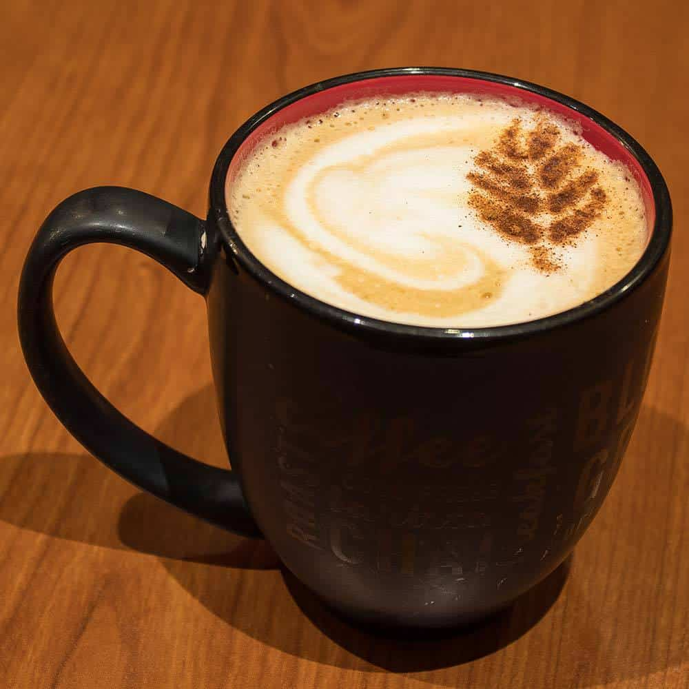

How to Brew a Latte

Learn to make one of these :)
When I was growing up, I had a number of fascinating experiences to do with lattes, which I'll be telling you all about.
Just kidding.
This recipe will explain to you how to make a yummy latte, easily and cheaply. It'll be a beginners guide,
so I'll be assuming you don't want to grind your own beans or invest much money into it.
What you'll need:
- Home-ground or store-bought coffee grinds (finer is better)
- A Moka Pot (an Aeropress would also work but look elsewhere for instructions.)
- A microwave
- Milk
- A milk frothier or a whisk
- Cup and tablespoon measuring cups
Steps:
- Measure a little less than 1/2 cup of water.
- Measure out 3-4 tablespoons of coffee grounds.
- Experiment a little!
- Different people like different strength coffee.
- In the bottom section of the Moka Pot, pour your water in.
- In the middle funnel-like section, pour your coffee grounds in.
- Screw it all together and place in on a burner roughly the size of the base of the Moka Pot.
- While you're waiting, measure out somewhere between 1/2 to 1 cup of milk.
- Again, its good to experiment.
- If you're unsure of how much you want, measure more and taste your coffee before adding too much.
- And remember, you can always make more later or the next day :)
- Important: Make sure the milk is in a container with an open top that can fit over double the volume!
- Whisk/froth the milk until the volume has doubled.
- Microwave the frothed milk in 15-30 second increments, stirring between.
- Note: The volume will increase as its heated.
- Once the Moka Pot is steaming (should take around 8-10 minutes), take it away from heat and stir the contents.
- This is because the coffee brewed at the start is stronger than the stuff brewed near the end.
- Pour the coffee in a mug, and add how much milk you want.
- The coffee you just brewed is super strong, (it's supposed to be closer to espresso), so be generous with the milk.
- Add the extra froth on top and enjoy!
- You can additionally add sugar or syrup to it, if thats what you like.